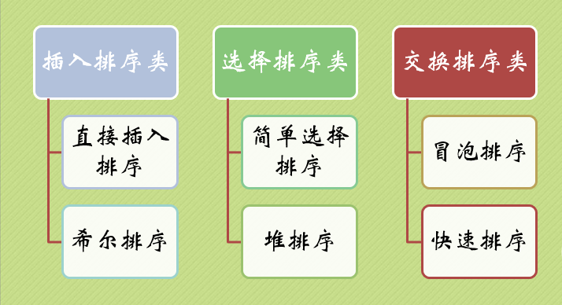
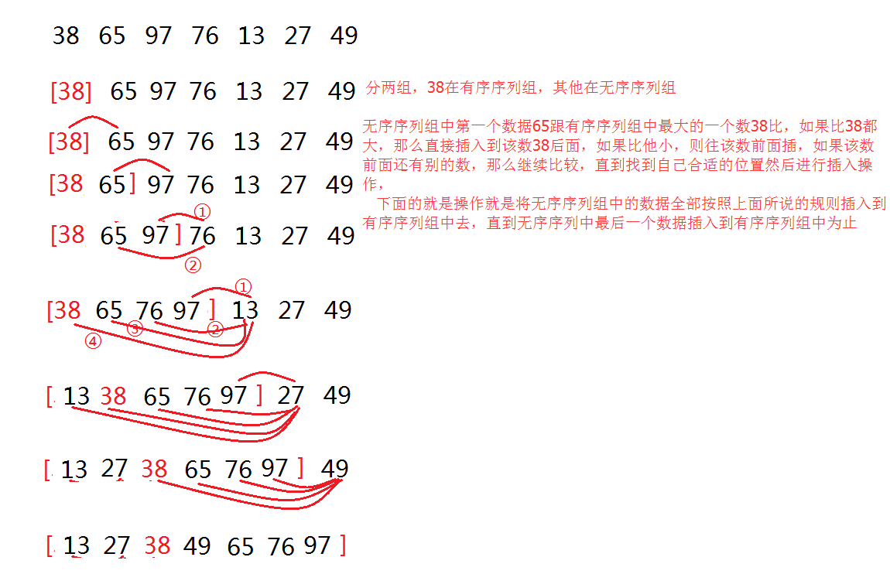
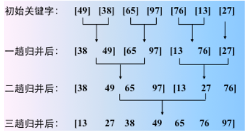
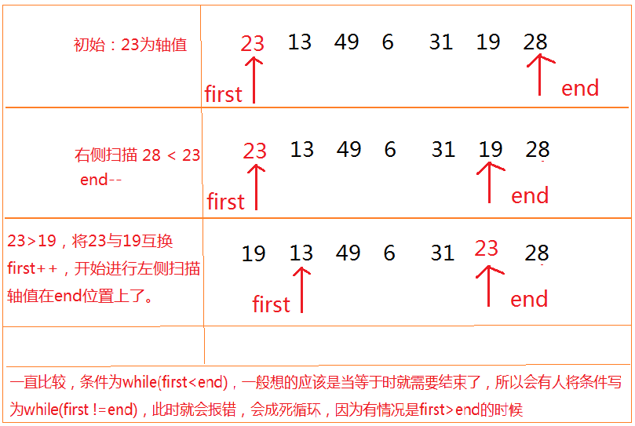
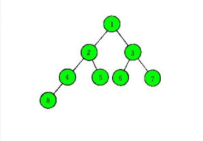
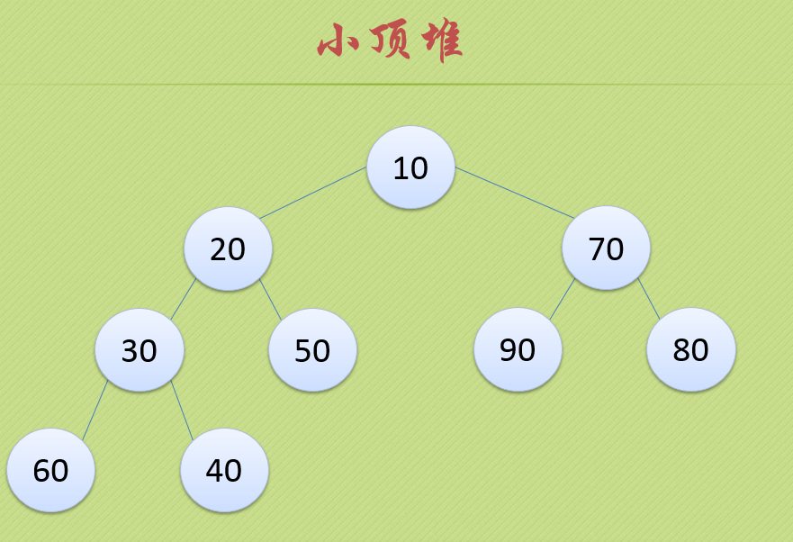
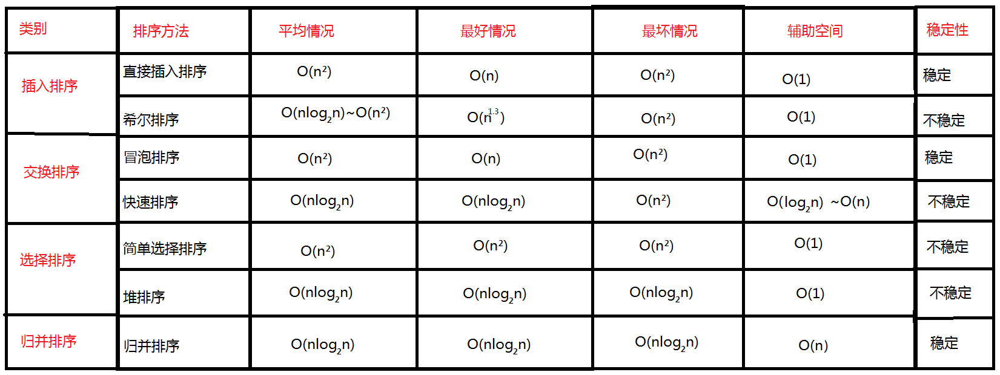

用Java实现7种排序算法
排序种类

选择排序

原理图如上所示：先将第一个位值上的数跟之后所有位置上的数依次进行比较，如果第一个位置上的数比第二个位置上的数大，则进行互换，然后继续将第一个位置上的数与第三个位置上的数进行比较，经过一轮的比较后，第一个位值上的数就是所有数中最小的一个，接着将第二个位置上的数与之后所有位置上的数进行比较，同样的规则，第二轮比较结束后，第二位放的就是所有数中第二小的数，依次往下比，直到最后一个位置结束。按照这种方法进行排序，就叫做选择排序。
|
|
插入排序
简单，给定的一组记录，将其分为两个序列组，一个为有序序列(按照顺序从小到大或者从大到小)，一个为无序序列，初始时，将记录中的第一个数当成有序序列组中的一个数据，剩下其他所有数都当做是无序序列组中的数据。然后从无序序列组中的数据中(也就是从记录中的第二个数据开始)依次与有序序列中的记录进行比较，然后插入到有序序列组中合适的位置，直到无序序列组中的最后一个数据插入到有序序列组中为止。

|
|
冒泡排序
冒泡排序跟选择排序一样的简单，好理解，整个过程就想气泡一样往上升，假设从小到大排序，对于给定的n个记录，从第一个记录开始依次对相邻的两个记录进行比较，当前面的记录大于后面的记录时，交换位置，进行一轮比较后，第n位上就是整个记录中最大的数，然后在对前n-1个记录进行第二轮比较，重复该过程直到进行比较的记录只剩下一个为止。

|
|
归并排序
归并排序有两种实现方式，一种是非递归的，一种是递归的，但是我觉得如果你理解了非递归的实现，那么你就知道了归并排序的原理，而递归的也就非常简单了。
什么是归并排序呢？(我们讲解的是2路归并排序)
一张图就可理解什么叫做2路归并排序

初始将一个数组中每个元素都看成一个有序序列(数组长度为n)，然后将相邻两个有序序列合并成一个有序序列，第一趟归并就可以得到n/2个长度为2(最后一个有序序列的长度可能是1，也可能不是，关键看数组中元素的个数了)的有序序列，在进行两两归并，得到n/4个长度为4的有序序列(最后一个的长度可能小于4)…一直这样归并下去，直到得到一个长度为n的有序序列1
简单来说，通过三步，解决三个问题，就可以写出归并排序
1、解决相邻两个有序序列归并成一个有序序列，非常简单，新增一个数组(长度和需要排列的数组相同)，
二路归并的核心操作，在归并的过程中，可能会破坏原来的有序序列，所以，将归并的结果存入另外一个数组中，设两个相邻的有序序列为r[s] ~r[m]和r[m+1]~r[t]，将这两个有序序列归并成一个有序序列，r1[s]~r1[t]，设三个参数i,j,k。 i和j分别指向两个有序序列的第一个记录，即i=s，j=m+1，k指向存放归并结果的位置(也就是将归并结果放到r1中的哪个位置)k=s。然后，比较i和j所指记录的数，取出较小者作为归并结果存入k所指的位置，然后将较小者的指向往后移动，直至两个有序序列之一的所有记录都取完，在将另一个有序序列的剩余记录顺序送到归并后的有序序列中(也就是放到r1中)
|
|
2、如何完成一趟归并？
这里就需要分情况了，三种情况，
假设每个有序序列中的元素个数为h(第一次归并的h=1)，i=0，从第一个元素开始。归并每次取两个有序序列，那么跨度就是2h，问题就来了，只要知道长度为n(n为数组的最大下标值)的数组中有几个这样的两个有序序列，那么可以进行不同的操作了。
第一种情况：(i+2h-1) <= n //比如，i=0，h=1时，(i+2h-1)的意思就是指向了第一个两个有序序列的最后一个位置的下标值，用它来跟n(n为数组最大的下标值)比较，如果小于n，那么说明后面还有别的数，如果等于n，说明到结尾了，整个数组正好全是两个有序序列得，不会有多余数。那么就执行一次归并，将这两个有序序列归并，然后i加2h。如果还符合这个条件，继续归并，如果不符合，判断别的情况。
第二种情况：(i+h-1) < n //说明最后还有两个有序序列，但是最后一个有序序列的长度不是h，同样将其进行归并
第三种情况: (i+h-1) >= n //说明只剩下最后一个有序序列，则直接将其有序序列送到r1的相应位置。
|
|
3、完成整个归并排序
前面我们解决了两个问题，一个是两个有序序列如何进行归并，一个是如何判断完成一趟归并过程。现在就需要解决如何控制二路归并的结束呢？也就是需要归并多少趟。
当步长等于n或者大于n时，说明只剩下一个有序序列了，那么即归并结束了。
|
|
快速排序
快速排序是对冒泡排序的增强，增强得点在于：冒泡排序中，记录的比较和移动是在相邻两个位置进行的，记录每次交换只能后移一个位置，因而总的比较次数和移动次数较多，而快排记录的比较和移动是从两端向中间进行的，较大的记录一次就能从前面移动到后面，较小的记录一次就能从后面移动到前面，这样就减少了比较次数和移动次数
快速排序原理：选取一个轴值(比较的基准)，将待排序记录分为独立的两个部分，左侧记录都是小于或等于轴值，右侧记录都是大于或等于轴值，然后分别对左侧部分和右侧部分重复前面的过程，也就是左侧部分又选择一个轴值，又分为两个独立的部分，这就使用了递归了。到最后，整个序列就变得有序了。
问题：如何选择轴值？如何将序列变成左右两部分？
轴值的选择有三种：
1、选取序列的第一个位置上的记录
2、选择序列的中间位置上的记录
3、将序列第一个位置 和 中间位置 和 末尾位置上的记录进行比较，选择大小居中的记录，
如何将序列划分成左右两部分？
看图的执行流程，当一趟比较下来，轴值的左侧和右侧就被排好了，其中利用了first和end两个参数，一个从起点开始，一个从末尾开始，当两个相等时，就将序列中所有记录都遍历了一遍，第一次的比较次数是和选择排序第一次比较次数是一样的，但是之后就开始不一样了，因为在轴值的左侧的元素就不用跟轴值右侧的元素进行比较了，而选择排序还是跟所有的比。

|
|
希尔排序
希尔排序其实是插入排序的升级版本，本质上进行的也是插入排序的操作，但是希尔排序并不是把一组记录看成一个整体，而将整个记录分为了若干组记录，然后在对每组记录进行插入排序，
分组规则为如下所示：假设有 1 2 3 4 5 6 7 8 9 10 十个位置(每个位置上都会放数，这里忽略数，只讨论位置)。(省略了插入排序操作，只对如何分组进行讲解，而完整的希尔排序就是在每次分组完之后进行插入排序操作即可)
步长为：5、3、1
第一次分为5组记录(组数跟步长是一样的)：1,6 、2,7、3,8、 4,9、 5,10 这五组记录，分别对这五组记录进行插入排序。
第二次分为3组记录：1,4,7,10、2,5,8、3,6,9 这三组记录，分别对这三组记录进行插入排序
第三次分为1组记录：1 2 3 4 5 6 7 8 9 10， 为这组记录进行插入排序，
而步长只要满足最后一次为1，并且是从大到小即可。一般使用(数组长度/2) 或者 (数组长度/3 +1) 来代表步长。
这样做的好处是：
将待排序的数组元素分成多组，每组中记录数相对较少
经过前几次的排序后，整个序列变为了“基本有序序列”，最后在对所有元素进行一次直接插入排序。
直接插入排序对基本有序和记录数少的序列的效率是非常高的，而希尔排序就是利用了这两点。

解释：第一次分组，49,13、38,27、65,49、97,55、76,04 五组，对这五组分别进行插入排序，在49找到13时，就会进行插入排序，位置会进行互换，而并非先全部分组，后排序。
按照步长一直重复执行，直到步长为1后，执行完最后一次直接插入排序，整个希尔排序就完成了。
运行时动态图：看最下面我分享的资源即可
堆排序
上面说的希尔排序是对插入排序的增强，那么堆排序呢，就是对选择排序进行增强，选择排序一个数据要跟每个数据都进行一次比较，并没有利用到一些比较的结果，比如，4 跟10比较，3跟4比较后，按理说不用让3跟10在比了，但是选择排序并没有这种智能化，而是老老实实的比较，而堆排序就完美的利用了前几次比较的结果，从而增加了效率。
讲解堆排序之前，必须要知道什么是堆？
堆是一颗完全二叉树，什么是完全二叉树？只有最下面的两层结点度能够小于2，并且最下面一层的结点都集中在该层最左边的若干位置的二叉树(还不懂就去百度一下什么是完全二叉树)

这个图是一个完全二叉树，但不是堆。
堆分两种，大顶堆和小顶堆
大顶堆：在完全二叉树的基础上，每个父节点都比自己的两个子结点大，这样的就是大顶堆，特点是根节点是最大的值，看下图，90比70,80大，70比60,10大，以此类推

小顶堆：和大顶堆相反，根节点是最小的值，并且每个父结点都比自己的子节点要小，如下图

堆排序就是利用堆的这种特点进行编写的，原理：先将一组拥有n个元素的序列构建成大顶堆或者小顶堆，在将根结点上的数跟堆最后一位数进行互换，此时，第n位的数就是整个序列中最大或者最小的数了，然后在将前n-1位元素进行构建成大顶堆或者小顶堆，在将根结点跟第n-1位进行互换，得到第2大或者第2小的数，在将前n-2位数进行构建，依次类推，直到只剩下1位元素即结束，排序完成。
通过讲解原理：堆排序分为三步
1、构建大顶堆或小顶堆
2、循环
根节点和末尾结点进行互换，
构建大顶堆或小顶堆
3、排序完成
|
|
总结比较各种排序算法的优缺点

1、注意，排序的稳定性的意思是：举例说明。
排序前：5,6（1）,1,4,3,6（2）,（第一个6在第二个6之前）
排序后：如果排序后的结果是1,2,3,4,5,6（1），6（2）那么就说此排序算 法是稳定的，反之为不稳定
2、当待排序记录个数n较大，并且是无序序列，对稳定性不作要求时，采用快速排序为宜
3、当待排序记录个数n较大，内存空间允许，要求排序稳定时，采用归并排序为宜
4、当待排序记录个数n较大，且序列中可能出现正序或逆序的情况，不要求稳定性，采用堆排序或归并排序为宜